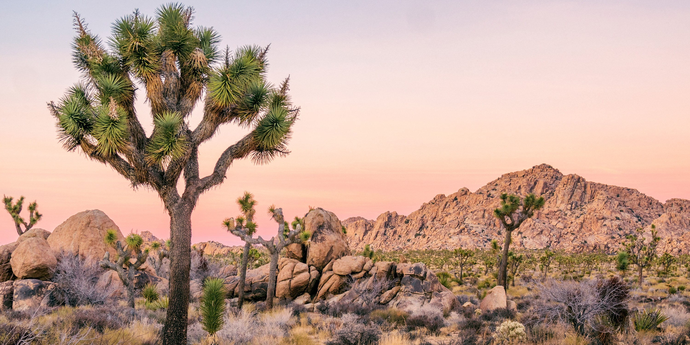

National Parks in California
-
Yosemite National Park
Yosemite National Park is a stunning national park located in the Sierra Nevada mountains of California. It is known for its breathtaking granite cliffs, towering waterfalls, ancient giant sequoias, and pristine wilderness. Visitors can enjoy a variety of outdoor activities, including hiking, camping, rock climbing, and wildlife watching. The park is also a UNESCO World Heritage site and a popular destination for nature lovers and outdoor enthusiasts.
Service hours: Open year-round
Address: Yosemite Valley, CA 95389
More information: Yosemite National Park Official Website
-
Sequoia National Park
Sequoia National Park is a stunning national park located in the southern Sierra Nevada mountains of California. It is known for its iconic giant sequoia trees, including the General Sherman Tree, which is the largest tree on Earth by volume. The park also features rugged mountains, deep canyons, granite cliffs, and alpine meadows. Visitors can enjoy hiking, camping, picnicking, and wildlife watching in this pristine wilderness area.
Service hours: Open year-round
Address: Three Rivers, CA 93271
More information: Sequoia & Kings Canyon National Parks Official Website
-
Joshua Tree National Park
Joshua Tree National Park is a unique desert park located in southeastern California. It is known for its otherworldly landscape of rugged rock formations, ancient Joshua trees, and vast desert vistas. The park offers opportunities for hiking, rock climbing, stargazing, and camping, and is a popular destination for outdoor enthusiasts, nature lovers, and photographers.
Service hours: Open year-round
Address: 74485 National Park Dr, Twentynine Palms, CA 92277
More information: Joshua Tree National Park Official Website